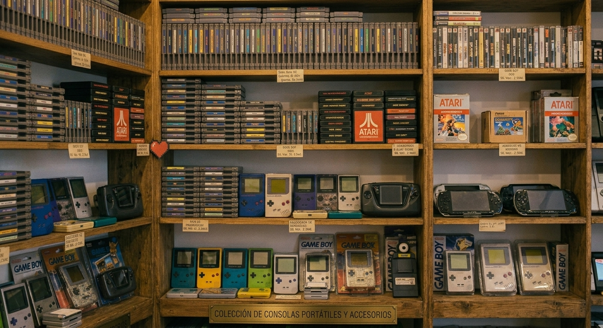
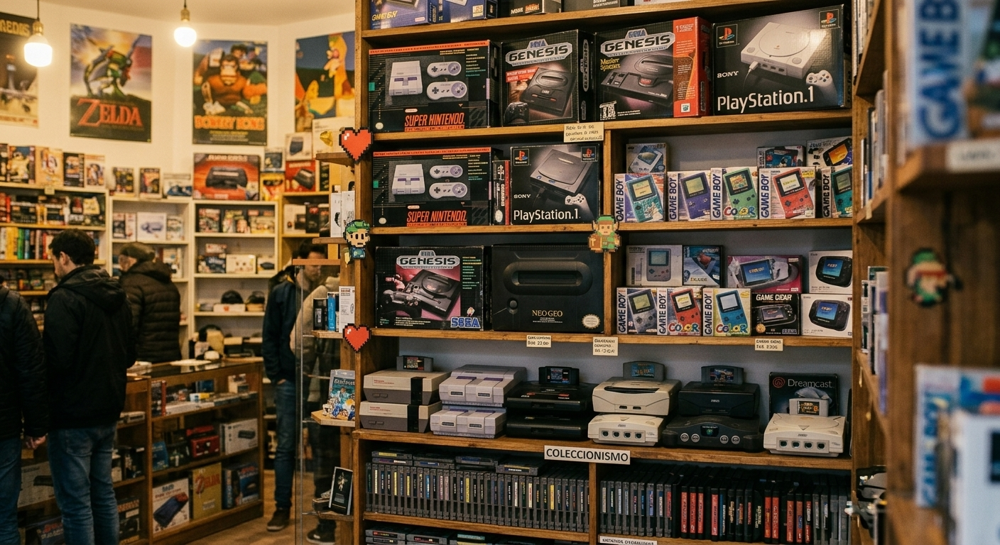

Retro Classic

Retro Classic es una tienda de videojuegos, consolas y videojuegos retros, que se encuentra ubicada en la ciudad de Buenos Aires, Argentina.
¿Qué es Retro Classic?
Somos un local que abarca todo tipo de jugadores: los que buscan el último lanzamiento, y los que quieren revivir un clásico. Nos especializamos en la restauración profesional de consolas de todas las épocas, asegurando un rendimiento impecable tanto para coleccionistas exigentes como para jugadores casuales. Desde el mantenimiento preventivo hasta la reparación de hardware, cuidamos tu equipo para que solo te preocupes por jugar.
¿Que buscar en nuestra tienda?
- Consolas actuales: Playstation, Xbox y Nintendo
- Consolas retros
- Juegos físicos
- Juegos digitales
- Servicio de limpieza y reparación para consolas

